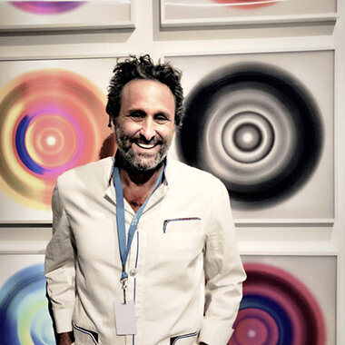

“At first glance…Bruce… doesn't initially seem like the whimsical kind…
His photographs… are focused, journalistic and frank.
The well-heeled lyrics that infiltrate his buoyant brand of pop are ruminative and straight forward, poetic yet never fussy.
Yet for all this blunt force, there is a capriciousness that belies his lighthearted sense of play and humor.
Photographically it is wrecked train tracks, battered sculptures, creaky barns, bruised busses, dime store Elvis impersonators and the wretched likes that are his subjects.
He adds a gently silly and unique perspective.
(His coloring)… gives each piece of black & white film a surrealist burst of pop color that makes the image he has captured come vibrantly alive — merging the beauty and sadness in his art with seamless elegance.”
Bruce Jefferies Reinfeld is from Philadelphia. His passion for photography began with his drive to capture images of the immediate world and the people that surrounded him. Through his early years of intensive self-study, he later honed his craft at the University of the Arts in Philadelphia and at NYU, Tisch School of the Arts in NYC. Bruce’s personal philosophy focuses on the belief that beauty surrounds us all. It exists even in the most common people, animals, and things. However, the distraction of our daily lives blinds us to this beauty, leaving us to just pass them without providing the appropriate recognition of their existence. Bruce’s mission is to direct us to see the beauty in unusual things, like the Lone Star Bus, Bull’s Horns, a rusting Cadillac, or the palm trees of Coconut Grove.
Reinfeld has lived a vibrant youth and has incorporated that adventurous spirit into his work. He has found the ability to use the lens of a camera to capture this beauty for all of us to enjoy. As Franz Kafka wrote so eloquently: “Anyone who keeps the ability to see beauty never grows old”. It is for that reason collectors love Bruce Reinfeld’s photographs. They point us to the simple things we would have never paid attention to or enough attention to otherwise, and he has inspired us to feel as timeless as his works. Reinfeld has developed an extraordinarily intense and interdisciplinary artistic research, exploring visual arts, music, graphic design, fashion, poetry, and urban performances, resulting in a conceptual and metaphysical reaction. Greatly influenced by graphic design and pop art, Reinfeld moves around across America aboard his Sprinter van capturing a unique perspective on everyday life.
He works with 35 mm film bodies and toy plastic cameras – along with infrared film and black & white stock in 35 mm and 120 mm format. A far cry from today’s world of digital cameras and hyper-editing techniques that accompany other photographers’ work. It doesn’t come as a surprise that, from 1990 onwards, Reinfeld attentively photographs wrecked train tracks, battered sculptures, creaky barns, bruised busses, dime-store Elvis impersonators, and the wretched likes that are his subjects. The photographs are non-manipulated and never staged or set up. Onto this, he adds a gentle silly perspective: he airbrushes colors onto each image digitally because of the detail that can be obtained. So the black and white photographs become so vibrantly alive with that surrealist burst of Pop color. The grainy black and white hues, almost monochrome, give a sense of space, reaction to time through perception and action, and wordplay which are all fundamental elements of Bruce Jefferies Reinfeld’s artistic research.
His newest work explores interactive dimensions with his innovative LENTICULAR process. Individual elements of the artwork are arranged in layers, creating a breathtaking depth effect. Mesmerizing images appear, shift, and change depending on the audience's viewpoint creating an engaging visual experience.
A study of abstract pattern, color, and movement was launched softly in December 2018 at Context Art Miami. Along with the top names in contemporary art, collectors, designers and curators took notice.
The movement within each piece leaves a positive lasting impression but doesn't distract from the overall design. Current and past projects in the Hamptons, Aspen, Miami, and New York City have left collectors & top designers excited and intrigued to see what Bruce will do next.
Bruce Jefferies Reinfeld doesn’t take too many photos or write too many songs, weeding out those photos that are not where they should be, and tearing down the songs that don’t say or sound exactly what and how they should. Bruce’s creativity encompasses his photography but he also has a band called Hifidisco. Music and photography may be different but they’re symbiotic and symmetrical to Reinfeld even if they weren’t always exactly equitable. He says that the skillset for everything he does is kind of tied together like a tree and its roots. Some roots are bigger than others but they are all connected. They have to be or it is not real.